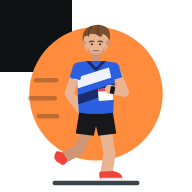

Mølle for Android
Intervaller på tredemølla, med pulsmåler, Zwift-fotpod og eksport til Strava og Garmin.
- 1Trykk på knappen og åpne molle.apk når den er lastet ned.
- 2Første gang: tillat installering fra Chrome når Android spør.
- 3Trykk Installer. Advarselen fra Play Protect kommer fordi appen ikke er fra Google Play.
Krever Android 10 eller nyere. Har du iPhone eller iPad, bruk iPhone-versjonen i stedet.